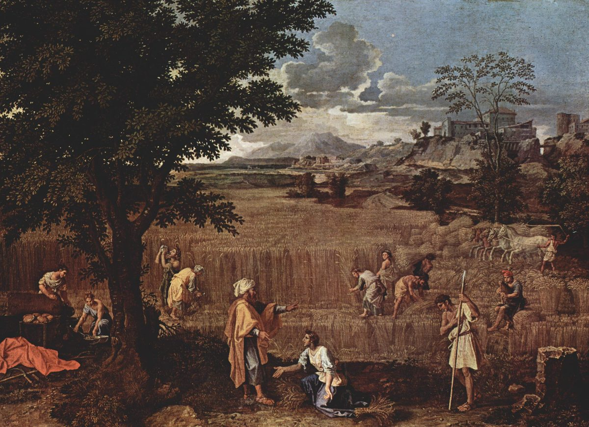

Ruth 2 — The Mister Translation

Poussin sets verses 5–10 in a full summer field: Boaz, his foreman standing by with a staff, and Ruth kneeling at his feet with her gleanings, while the reapers work on around them and bread is set out under the tree for the meal of verse 14. The painting is “Summer” in Poussin’s late cycle of the four seasons, each told through a scene from the Bible.

Translator's Notes — verse by verse
Boaz. Before Ruth sets out, the narrator tells the reader what she does not know: Naomi has “a kinsman of her husband’s”. The written Hebrew has meyudda, “one known”, and the margin moda, “a relative”, the word of “call understanding your kinswoman” (Proverbs 7:4). He is gibbor chayil, “a mighty man of valour”, the title of Jephthah (Judges 11:1, now on these pages); the phrase stands in thirteen verses of the Hebrew Bible. Chayil is strength of every kind: force, worth, wealth. The KJV and the ASV have “a mighty man of wealth”, the NWT 1984 “a man mighty in wealth”, the NIV “a man of standing”, and the Douay “a powerful man, and very rich”.
“Among the ears of grain.” Ruth asks to “glean”, laqat, “among the ears of grain”, ba-shibbolim: the plural of shibbolet, the word Ephraim could not pronounce at the fords of the Jordan (Judges 12:6, now on these pages). Gleaning is the law’s provision for the poor and the stranger: “you shall not … gather the gleanings of your harvest” (Leviticus 19:9), and the forgotten sheaf “shall be for the stranger, for the orphan and for the widow” (Deuteronomy 24:19), both now on these pages. Ruth is all three. She hopes to glean “after someone in whose eyes I find favor”; the phrase will come back to her twice (vv. 10 and 13). The ASV has “glean among the ears of grain after him in whose sight I shall find favor”.
“By chance she chanced.” The Hebrew doubles the word: vayyiqer miqreha, “and her chance chanced”, from miqreh, the word for what simply happens. The pair stands in one verse of the Hebrew Bible. The narrator calls it chance and lets the reader notice whose field it is. The ASV has “her hap was to light on the portion of the field belonging unto Boaz”, the NWT 1984 “by chance she lighted on the tract of the field belonging to Boaz”. Josephus also says she came to Boaz’s field by chance (Antiquities 5.324, numbered 5.9.2 in Whiston).
The greeting. Boaz greets the reapers, “Jehovah be with you”, and they answer, “Jehovah bless you”, the first words of the priestly blessing, “Jehovah bless you, and keep you” (Numbers 6:24, now on these pages). The Bethlehem of Judges 17–19 was the home town of a hired Levite and of a concubine; here, in the same town, a landowner blesses his workers in Jehovah’s name. The ASV has “Jehovah be with you” and “Jehovah bless thee”.
“Whose young woman is this?” Boaz asks whose she is, not who she is: le-mi ha-na’arah ha-zot. The foreman answers with her nation first, “a Moabite young woman”, the law’s excluded people: “a Moabite shall not enter the assembly of Jehovah” (Deuteronomy 23:4, now on these pages). The NWT 1984 has “To whom does this young woman belong?”; the KJV “Whose damsel is this?”.
A hard verse. Verse 7 ends with four Hebrew words that resist translation, “this, her sitting the house, a little”. They may mean that she has hardly rested in the shelter, or that she has only just sat down in it. The ASV has “save that she tarried a little in the house”; the NWT 1984 “until her sitting down just now in the house”; the NIV “except for a short rest in the shelter”; the Douay “hath not gone home for one moment”. The Greek has “she did not rest in the field a little”. This translation keeps the Hebrew’s order: “her sitting in the house has been little”.
“Cling.” Boaz tells Ruth, “cling to my young women”: davaq, the verb of Ruth 1:14, where “Ruth clung to her” mother-in-law (now on these pages). He has “commanded the young men not to touch you”, and she may drink from what they draw. The KJV and the ASV have “abide here fast by my maidens”, the NWT 1984 “keep close by my young women”.
Noticed, and a foreigner. “Why have I found favor in your eyes, that you should take notice of me, when I am a foreigner?” The two words are one root: le-hakkireni, “to notice me”, and nokhriyyah, “a foreigner”, both from nakar, which means both to recognize and to be strange. The form “to notice me” stands in one verse of the Hebrew Bible. The Levite of Judges 19:12 would not stop in “a city of foreigners” (now on these pages); here the foreigner is the one taken in. The ASV has “that thou shouldest take knowledge of me, seeing I am a foreigner”; the KJV “seeing I am a stranger”.
Abraham’s road. Boaz has heard how she “left your father and your mother and the land of your kindred, and came to a people that you did not know before”. The words recall the call of Abram, “from your land, from your kindred, and from your father’s house” (Genesis 12:1), and the man who “leaves his father and his mother and clings to his wife” (Genesis 2:24), both now on these pages. “It has surely been told me” is hugged huggad, the doubled verb of the Gibeonites’ “it was surely told to your servants” (Joshua 9:24, now on these pages); the doubled form stands in two verses of the Hebrew Bible. The ASV has “It hath fully been showed me”; the NWT 1984 “The report was fully made to me”.
“Under whose wings.” “May your wages be full from Jehovah the God of Israel, under whose wings you have come to take refuge.” Maskoret, “wages”, is the word Laban used to Jacob, “what shall your wages be?” (Genesis 29:15, now on these pages). The words “under his wings” stand in two verses of the Hebrew Bible: here and Psalm 91:4, “under his wings you will take refuge” (now on these pages). The wing, kanaf, will come back when Ruth asks Boaz himself to spread his “wing” over her (Ruth 3:9, now on these pages). The ASV has “under whose wings thou art come to take refuge”, the NWT 1984 “under whose wings you have come to seek refuge”.
“Spoken to the heart.” Ruth answers, “you have comforted me, and you have spoken to the heart of your maidservant”: the two verbs of Joseph to his brothers, “he comforted them, and spoke to their heart” (Genesis 50:21), and the second is the Levite’s errand, “to speak to her heart” (Judges 19:3), both now on these pages. She adds, “though I am not like one of your maidservants”; the Greek drops the “not” and has “and look, I will be like one of your maidservants”. The ASV has “thou hast spoken kindly unto thy handmaid”, the Douay “hast spoken to the heart of thy handmaid”.
At the meal. “Come here, and eat of the bread, and dip your morsel in the vinegar”: chomets, sour wine, the reapers’ drink. Boaz himself “held out roasted grain to her”, qali, grain parched in the ear (qalui). “She ate and was satisfied, and had some left over”; the three verbs together stand in one verse of the Hebrew Bible, and what is left over goes home to Naomi in verse 18. The ASV has “they reached her parched grain, and she did eat, and was sufficed, and left thereof”; the NWT 1984 “dip your piece in the vinegar”.
“Pull out some for her.” Boaz goes beyond the law. She may glean “even among the sheaves”, where gleaners did not go, and the men are to “pull out some for her from the bundles, and leave it”: shol tashollu, “you shall surely pull out”. They are not to “put her to shame” or “rebuke her”. The ASV has “pull out some for her from the bundles, and leave it”; the KJV “let fall also some of the handfuls of purpose for her”. Josephus has Boaz tell her not to glean but to reap whatever she could (Antiquities 5.325).
An ephah of barley. At evening she “beat out what she had gleaned”: chavat, the verb of Gideon “beating out wheat in the winepress” (Judges 6:11) and of the olive tree beaten in the gleaning law (Deuteronomy 24:20), both now on these pages. The verb stands in five verses of the Hebrew Bible. The yield is “about an ephah of barley”, many days’ bread for two women from one day’s gleaning. The Douay adds a reckoning of its own, “about the measure of an ephi of barley, that is, three bushels”.
“Blessed be the one who took notice of you.” Naomi sees the barley and the leftover bread and blesses the unknown man before she knows his name: “Blessed be the one who took notice of you”, makkirekh, the verb of Ruth’s “that you should take notice of me” (v. 10). Ruth saves the name for the end of her answer: “The name of the man with whom I worked today is Boaz.” The ASV has “blessed be he that did take knowledge of thee”, the NWT 1984 “May the one who took notice of you become blessed”.
Whose kindness? “Blessed be he by Jehovah, who has not forsaken his kindness to the living and to the dead.” The Hebrew does not settle whose chesed it is, Jehovah’s or Boaz’s. The words are those of Abraham’s servant at the well, “Blessed be Jehovah … who has not forsaken his kindness and his faithfulness toward my master” (Genesis 24:27, now on these pages), and there the kindness is God’s; “has not forsaken his kindness” stands in two verses of the Hebrew Bible, there and here. “The living and the dead” takes up Naomi’s prayer in Ruth 1:8 (now on these pages), “as you have dealt with the dead and with me”. The Douay makes it Boaz’s, “because the same kindness which he shewed to the living, he hath kept also to the dead”; the ASV keeps it open, “who hath not left off his kindness to the living and to the dead”.
“One of our redeemers.” “The man is near to us; he is one of our redeemers”: mi-go’alenu, the first time the book uses go’el, the kinsman who buys back what a poor relative has sold (Leviticus 25:25, now on these pages). “One of” them: there is more than one, and the order between them will matter (Ruth 3:12, now on these pages). The ASV has “one of our near kinsmen”, the NIV “one of our guardian-redeemers”, the NWT 1984 “one of our repurchasers”.
Young men or young women. Boaz told Ruth to cling to “my young women” (v. 8); Ruth reports him as saying “cling to the young men who are mine”. Naomi answers with the young women again: “It is good, my daughter, that you go out with his young women.” The narrator has her called “Ruth the Moabite” here, as at verse 2. The ASV has “Thou shalt keep fast by my young men”, the NWT 1984 “Close by the young people that are mine”.
“So that they do not fall upon you.” Naomi’s reason is ve-lo yifge’u vakh, “so that they do not fall upon you in another field”: paga, the Danites’ threat to Micah, “men bitter of soul will fall upon you” (Judges 18:25, now on these pages). A foreign woman alone in a stranger’s field was not safe. The KJV and the ASV have “that they meet thee not in any other field”, the NWT 1984 “that they may not annoy you in another field”, the NIV “you might be harmed”.
Two harvests. “So she clung to the young women of Boaz to glean, until the end of the barley harvest and of the wheat harvest”, davaq once more, and the season that began “at the beginning of the barley harvest” (Ruth 1:22, now on these pages) runs to its end. “And she lived with her mother-in-law”: the chapter closes on the two women together, as Ruth had sworn. The ASV has “unto the end of barley harvest and of wheat harvest”; the Douay “till all the barley and the wheat were laid up in the barns”.
Patterns worth carrying forward
Where this translation keeps the words exact and distinct: “a mighty man of valour” for gibbor chayil, as with Jephthah; “glean” for laqat, through the whole chapter; “ears of grain” for shibbolim; “by chance she chanced” for vayyiqer miqreha; “cling” for davaq, as in Ruth 1:14; “take notice of” and “foreigner” for the one root nakar; “wages” for maskoret, as with Jacob; “under whose wings” for tachat kenafav; “comforted” and “spoken to the heart”, as with Joseph; “kindness” for chesed, as at Genesis 24:27; and “redeemers” for go’alim.
Echoes paid. Ruth 1:14’s “clung” comes back three times, the barley harvest of Ruth 1:22 runs to its end, and the “dealing with the dead” of Ruth 1:8 returns as Naomi’s blessing. Chesed, planted at 1:8, is sounded at 2:20. The gleaning laws of Leviticus 19 and Deuteronomy 24 are kept and outdone, and the Bethlehem of Judges 19 hears “spoken to the heart” again.
Echoes planted. The “wing” of 2:12 comes back when Ruth asks Boaz to spread his own over her (3:9); “one of our redeemers” becomes a question of which redeemer comes first (3:12); and chayil, Boaz’s title here, returns when he calls Ruth “a woman of valour” (3:11). All three are now on these pages.
Next in this book: Ruth 3 — Naomi seeks “rest” for Ruth and sends her by night to the threshing floor; Ruth uncovers Boaz’s feet and asks him to spread his wing over her, “for you are a redeemer”, and he answers that there is a nearer one.